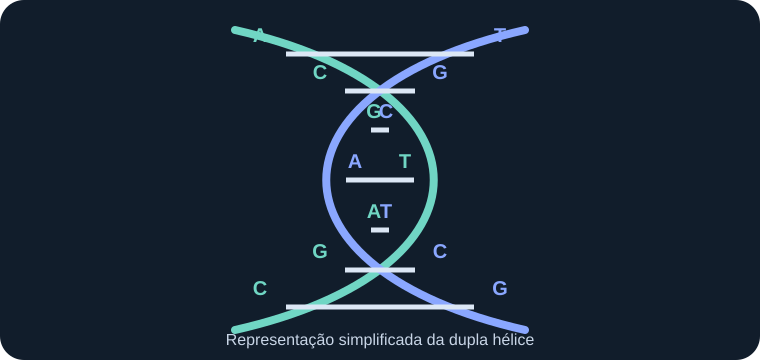

O que a genética estuda
A genética estuda os genes, as variações existentes no material hereditário e os mecanismos pelos quais essas informações passam de uma geração para outra. Ela procura compreender tanto a transmissão das características quanto a maneira como a informação genética participa do funcionamento dos organismos.
Uma característica observável, como a cor de uma flor ou determinado tipo sanguíneo, pode depender de um ou de vários genes. Em muitos casos, o ambiente também participa de sua manifestação. Por isso, a genética não considera que todas as características sejam definidas exclusivamente pelos genes.
Hereditariedade e variação
Hereditariedade é a transmissão de informações biológicas dos organismos parentais para seus descendentes. Na reprodução sexuada, cada gameta contribui com parte do material genético que formará o novo indivíduo.
Variação genética corresponde às diferenças na sequência do DNA entre indivíduos. Essas diferenças ajudam a explicar por que irmãos podem apresentar combinações distintas de características, mesmo tendo os mesmos pais. A reprodução, a recombinação e as mutações contribuem para a diversidade genética.
Como a informação genética está organizada
Na maioria dos seres vivos, a informação hereditária está armazenada no DNA. Essa molécula encontra-se organizada em estruturas chamadas cromossomos. Os genes são trechos de DNA que contêm informações para produzir moléculas funcionais, como proteínas ou diferentes tipos de RNA.
DNA, gene e cromossomo não são sinônimos: o DNA é a molécula; o gene é uma região funcional dessa molécula; e o cromossomo é uma estrutura formada por DNA associado a proteínas.
Principais assuntos deste estudo
- Introdução à genética: campo de estudo, hereditariedade e relação entre genes e ambiente.
- DNA, genes e cromossomos: estrutura do material genético e organização da informação.
- Gregor Mendel e as ervilhas: história dos experimentos que fundamentaram a genética clássica.
- Leis de Mendel: princípios que explicam padrões simples de transmissão hereditária.
- Conceitos fundamentais: alelos, genótipo, fenótipo, dominância e outros termos.
- Cruzamentos genéticos: gametas, probabilidades e quadros de Punnett.
- Aplicações da genética: usos científicos, médicos, agrícolas e sociais.
A genética na atualidade
Atualmente, técnicas de análise do DNA permitem estudar parentesco biológico, investigar a origem de certas doenças, acompanhar a diversidade de populações e desenvolver pesquisas sobre plantas, animais e microrganismos. O avanço dessas técnicas também exige responsabilidade: informações genéticas são pessoais e seu uso deve respeitar a privacidade, a dignidade e os direitos das pessoas.